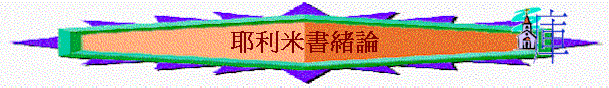
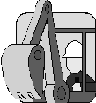
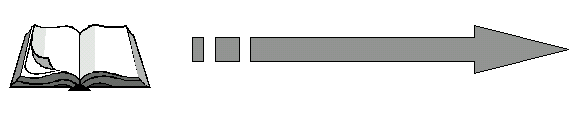

一．本書地位
１．作者地位
〜耶利米（Jeremiah），有「主設立」「高舉的」意思
「便雅憫地亞拿突城的祭司中，希勒家的兒子耶利米的話記在下面。」１：１
a.舊約肯定
「就是他在位第一年，我但以理從書上得知耶和華的話臨到先知耶利米，論耶路撒冷
荒涼的年數，七十年為滿。」但９：２
〜但以理肯定他是先知
b.新約的地位
「他們說：「有人說是施洗的約翰；有人說是以利亞；
又有人說是耶利米或是先知裡的一位。」」太１６：１４
〜將以利亞、耶利米等同
２．本書份量
「行耶和華他神眼中看為惡的事。先知耶利米以耶和華的話勸他，他仍不在耶利米面前自
卑。」代下３６：１２
「波斯王古列元年，耶和華為要應驗藉耶利米口所說的話，就激動波斯王古列的心，使他
下詔通告全國說：」拉１：１
「就是他在位第一年，我但以理從書上得知耶和華的話臨到先知耶利米，論耶路撒冷荒涼
的年數，七十年為滿。」但９：２
「這就應了先知耶利米的話，說：在拉瑪聽見號咷大哭的聲音，是拉結哭他兒女，不肯受
安慰，因為他們都不在了。」太２：１７－１８
「便教訓他們說：「經上不是記著說：我的殿必稱為萬國禱告的殿嗎？你們倒使他成為賊
窩了。」」可１１：１７（參考耶７：１１）
「如經上所記：『誇口的，當指著主誇口。』」林前１：３１（參考耶９：２３－２４）
「所以主指著他的百姓說（或作：所以主指前約的缺欠說）：日子將到，我要與以色列家和猶大家另立新約，不像我拉著他們祖宗的手，領他們出埃及的時候，與他們所立的約。因為他們不恆心守我的約，我也不理他們。這是主說的。主又說：那些日子以後，我與以色列家所立的約乃是這樣：我要將我的律法放在他們裡面，寫在他們心上；我要作他們的神；他們要作我的子民。他們不用各人教導自己的鄉鄰和自己的弟兄，說：你該認識主；因為他們從最小的到至大的，都必認識我。我要寬恕他們的不義，不再記念他們的罪愆。」來８：８－１２（參考耶３１）
〜以上書卷作者及耶穌曾提及耶利米書及引用其說話
二．著作年代
「便雅憫地亞拿突城的祭司中，希勒家的兒子耶利米的話記在下面。猶大王亞們的兒子約西亞
在位十三年，耶和華的話臨到耶利米。從猶大王約西亞的兒子約雅敬在位的時候，直到猶大王約西亞的兒子西底家在位的末年，就是十一年五月間耶路撒冷人被擄的時候，耶和華的話也常臨到耶利米。耶利米說，耶和華的話臨到我說：」１：１－４
「加利亞的兒子約哈難和一切軍長卻將所剩下的猶大人，就是從被趕到各國回來在猶大地寄居的男人、婦女、孩童，和眾公主，並護衛長尼布撒拉旦所留在沙番的孫子亞希甘的兒子基大利那裡的眾人，與先知耶利米，以及尼利亞的兒子巴錄，都帶入埃及地，到了答比匿。這是因他們不聽從耶和華的話。」４３：５－７
〜由南國約西亞在位十三年至以色列滅國，餘民下埃及
|
領袖 |
約西亞è
約哈斯è
約雅敬è
約雅斤è
西底家è |
基大利（省長） |
|
B.C. |
６４０
６０９
６０５
５９７ |
５８６ |
|
被擄 |
第１次 第２次 |
第３次 |
亡國
t────────耶利米事奉─────── t．．．．．．è下埃及
６２７
〜南國最後王是西底家，之後巴比倫滅了以色列國；巴比倫派基大利在猶大地作為省長
〜其後基大利被殺，以色列民與耶利米下往埃及；耶利米事奉接近半個世紀
三．寫作背景
王朝
南國（猶大國）
｜
（１）約西亞
１８年
|
|
|
|
|
|
同輩 è
（３）約雅敬（兄） （２）約哈斯
（５）西底家
１１年 ３個月 １１年
｜
（４）約雅斤
３個月
２．問題
a.
在觀念上
i.
對自己è自以為是
「你怎能說：我沒有玷污、沒有隨從眾巴力？你看你谷中的路，就知道你所行的如何。你是快行的獨峰駝，狂奔亂走。你是野驢，慣在曠野，慾心發動就吸風；起性的時候誰能使他轉去呢？凡尋找他的必不至疲乏；在他的月分必能尋見。」耶 2:23-24
ii.對前景è充滿盼望
「我就說：「唉！主耶和華啊，那些先知常對他們說：『你們必不看見刀劍，也不遭遇饑荒；耶和華要在這地方賜你們長久的平安。』」」１４：１３
iii.對神è覺神不公平
「百姓若說：『耶和華我們的神為什麼向我們行這一切事呢？』你就對他們說：『你們
怎樣離棄耶和華（原文作我），在你們的地上事奉外邦神，也必照樣在不屬你們的
地上事奉外邦人。』」５：１９
b.
在罪惡上
i.
遍地的淫亂 è拜偶像
ii.心中的橫梗
è見到北面之國，仍不懼怕
iii.屢次的不從 è神管派先知多次勸籲，仍不回轉
iv.生活的不義
è充滿欺壓，殺人
v.言語的虛謊
è有假先知說城會有平安
vi.屬靈的驕傲
è自以為有神的殿就得平安
vii.靠人的幫助
è寧倚靠埃及，不仰望神
c.
小結
「西底家登基的時候年二十一歲，在耶路撒冷作王十一年，行耶和華他神眼中看為惡的事。先知耶利米以耶和華的話勸他，他仍不在耶利米面前自卑。尼布甲尼撒曾使他指著神起誓，他卻背叛，強項硬心，不歸服耶和華以色列的神。眾祭司長和百姓也大大犯罪，效法外邦人一切可憎的事，污穢耶和華在耶路撒冷分別為聖的殿。耶和華他們列祖的神因為愛惜自己的民和他的居所，從早起來差遣使者去警戒他們。他們卻嘻笑神的使者，藐視他的言語，譏誚他的先知，以致耶和華的忿怒向他的百姓發作，無法可救。」代下３６：１１－１６
〜啟發：他們如此悖逆，屢勸不改，神可以怎做呢？
如何扭轉他們自以為是，自以為平安的觀念？
如何重新建立合神心意的國度？
四．本書主題──「拆毀與建立」
直接指明
「看哪，我今日立你在列邦列國之上，為要施行拔出、拆毀、毀壞、傾覆，又要建立、
栽植。」１：１０
「我何時論到一邦或一國說，要拔出、拆毀、毀壞；」１８：７
「我先前怎樣留意將他們拔出、拆毀、毀壞、傾覆、苦害，也必照樣留意將他們建立、
栽植。這是耶和華說的。」３１：２８
「你們若仍住在這地，我就建立你們，必不拆毀，栽植你們，並不拔出，因我為降與你
們的災禍後悔了。」４２：１０
「你要這樣告訴他，耶和華如此說：我所建立的，我必拆毀；我所栽植的，我必拔出；
在全地我都如此行。」４５：４
〜本書一開始（在耶利米蒙召時），已指明神要透過
耶利米的事奉，傳遞，進行拆毀與建立的行動
２．書中字眼
〜全書充滿「拆毀」「拔出」「毀壞」「傾覆」「建立」「栽」「打碎」「攻擊」「焚燒」「歸
回」等拆毀與建立字眼
〜與「拆毀與建立」相關的對象，物件也充滿本書，例如：「城」「牆」「器皿」「樹」「果」
「園」．．．．等相關對象
３．針對問題
a.
關乎選民
〜選民自負的觀念è 神要拆毀他們的自負，指斥他們的罪惡
〜選民敗壞的罪行è 神要進行傾覆的審判與管教
〜選民被擄後
è 神卻要建立、憐恤、栽植
b.關乎耶利米
〜他被週圍的同胞，領袖攻擊，人想拆毀他的事奉與所說的話
〜神卻要建立耶利米成為堅城、鐵柱、銅牆
c.關乎外邦
〜外邦攻擊選民，極其驕傲，鄙視聖國，神卻要進行打碎式的審判
〜但神仍有恩典，也要最後建立部份幫國
五．本書大網
１．結構文體
１－３３：宣講性
３４－４４：歷史性
４５－５１：預言性
２．內容分段
∼引言 １ è交待全書內容與耶利米事奉的重點
a.拆毀聖城的信息（宣講性）２－３３ è對選民講解拆毀與建立的信息
b.印証敗壞的歷史（歷史性）３４－４４è從被擄前，被擄後的歷史顯出選民的敗壞
c.打碎列邦的預言（預言性）４５－５１è預言列邦的命運，將被神擊打
∼總結
５２
è從最後補篇歷史事件，作為結束及總結
|
拆
毀 與 建 立 |
||||
|
引 言 |
拆毀聖城的信息 |
印証敗壞的歷史 |
打碎列邦的預言 |
總結 |
|
１ |
２－３３ |
３４－４４ |
４５－５１ |
５２ |
| 〜先要拆毀，才得建立！ |
 |
六．真理學習
１．更深的認識事奉（從耶利米身上學習）
a.事奉的本質
〜不是你的喜好，你的負擔，的理想，而是神要你怎樣就怎樣，可能不是你一直期望
的，更超越人的常理
b.事奉者的挑戰
〜耶利米面對多次苦難，環境危殆，內心矛盾，事奉沒果效，別人仇視等挑戰
c.事奉者的感受
〜耶利米在事奉過程中會流淚、發昏、不明白、掙扎（與傳廣審判信息）、激憤、難過，
但神沒否定他的感受
d.事奉者的動力
〜面對這麼多的挑戰，耶利米靠甚麼可以站立得穩？
i.神的同在
ii.神的保守
iii.神的肯定
e.事奉者的成長
〜他有掙扎，但也有成長，不是一時，經很多內心交戰，與神的對話，最後可靠神勇
往直前
f.事奉者的榜樣
i.
真正的順服
ii.持久的忠心
iii.不息的愛心
２．更深的認識真神
a.祂的作為
i.照各人所行的報應各人
〜自持所有 è 失去擁有
〜虛假宗教樣式è
焚燒聖殿
〜離棄神
è 被神棄
〜以為有平安 è 卻沒平安
〜不聽從神
è 被人管轄
〜不守安息年 è 被擄七十年
〜不牧養羊群 è 被擊打
〜靠外幫
è 被外邦攻擊
ii.拆毀為要建立
b.祂的說話
i.一定會成就
ii.不會因人而變（假先知，選民的抗拒）
c.祂的屬性
i.忌邪
ii.憐愛
iii.信實
〜人背約，祂仍可信
d.祂的主權
〜祂是匠，人只是祂的器皿
e.祂的能力
〜祂如可怕的勇士，列邦、列國沒人可比
七．新約預言
１．預言彌賽亞
「耶和華說：「日子將到，我要給大衛興起一個公義的苗裔；他必掌王權，行事有智慧， 在地上施行公平和公義。在他的日子，猶大必得救，以色列也安然居住。他的名必稱為『耶和華我們的義』。」」２３：５－６
２．預言希律殺嬰
「耶和華如此說：在拉瑪聽見號咷痛哭的聲音，是拉結哭他兒女，不肯受安慰，因為
他們都不在了。」３１：１５（參考太２：１７－１８）
３．預言新約建立
「耶和華說：「日子將到，我要與以色列家和猶大家另立新約，不像我拉著他們祖宗的
手，領他們出埃及地的時候，與他們所立的約。我雖作他們的丈夫，他們卻背了我的
約。這是耶和華說的。」耶和華說：「那些日子以後，我與以色列家所立的約乃是這樣：
我要將我的律法放在他們裡面，寫在他們心上。我要作他們的神，他們要作我的子民。」
３１：３１－３３（參考來８：８－１２）
